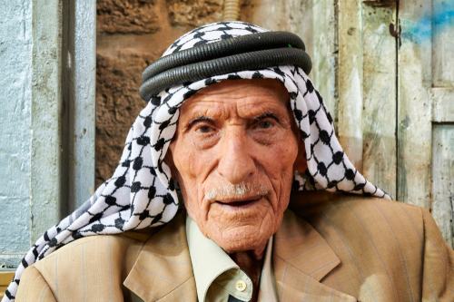
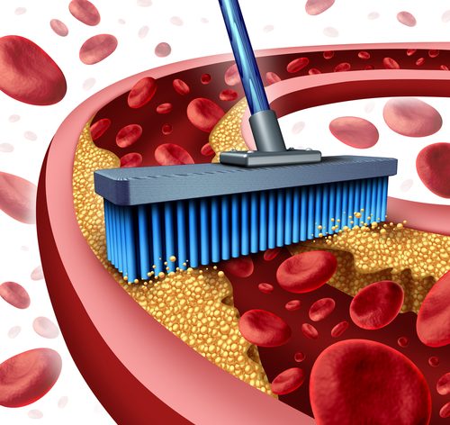
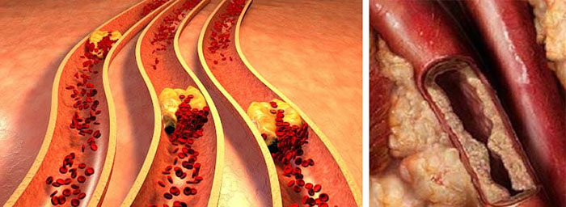
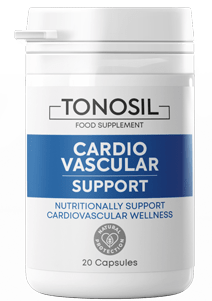
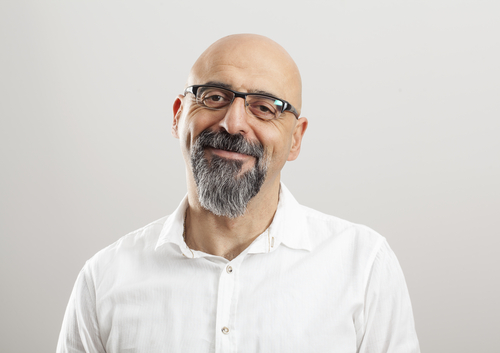

"ريد أن أعيش حتى 150 عامًا!" أخبر أحد الأشخاص المحليين المعروفين بكبر سنه, عن كيفية
إطالة حياته"
ولد عبد الأحد في وقت أصبح فيه عبد العزيز للتو أميرًا للرياض. لقد
نجا من حروب توحيد الإمارات والانتفاضات ومعارك تأسيس الدولة. يعتبر أكبر معمر في السعودية. الآن يبلغ من
العمر 120 عامًا.

عبد الاحد, 120 عاما
لم يعش عبد أكثر من أقرانه فحسب، بل أكثر من جيله أيضًا.
يخضع هذا الرجل المسن والقوي لفحوصات طبية بانتظام. كل عام يقال له نفس
الشيء: إنه يتمتع بصحة جيدة!
عبد يسكن في منزل خشبي كبير بناه بنفسه. وهو يعتني بالمنزل بنفسه.
وأيضًا، مثل جميع سكان قرية - يحب الصيد - يخرج بنفسه للصيد.
عبد يسكن في منزل خشبي كبير بناه بنفسه. وهو يعتني بالمنزل بنفسه. وأيضًا، مثل جميع سكان قرية - يحب
الصيد - يخرج بنفسه للصيد.
لقد جئنا إلى المعمر لإجراء مقابلة ومعرفة سره الرئيسي - كيف نعيش
طويلاً ولا نمرض.
- عبد الأحد ، لقد عشت مثل هذه الحياة الطويلة. أطول بكثير من أي
شخص آخر. كيف فعلت ذلك؟
- يسألوني هذا السؤال طوال الوقت. ليس هناك سر - الأمر كله يتعلق
بالأوعية النظيفة. علمني المعالج القديم صابر هذا عندما كنت طفلاً. جاءت إليه القرية بأكملها لطلب النصيحة
ومن قرى أخرى جاؤوا أيضًا. وأثناء الحرب أخذوه لمساعدة الجنود وللأسف
- لم يعد.
وهو أخبرني ما هي الأعشاب المفيدة للصحة. كان لدي أخت بعد ذلك. كانت
تتألم كثيرا. كان والداي قلقين عليها وأصرّا على تنظيف الأوعية الدموية. بعد أقل من شهر، تعافت أختي. منذ ذلك
الحين، لم يكن لدي أدنى شك في أن الأوعية الدموية تضمن صحة الكائن
الحي بأكمله. كعائلة، قمنا بتنظيفها بانتظام. ومع ذلك، توفي والداي بشكل مأساوي في عام 1987. وشقيقتي أيضا عاشت
وقتا طويلا ولكن أقل مني. توفيت عن عمر يناهز 95 عامًا. كما أنني أعطي دائمًا تعليمات لأولادي بخصوص مراقبة
الأوعية الدموية.
لهذا السبب يكمن سر طول العمر في الأوعية، يجب تنظيفها من وقت
لآخر. لكن لا أحد يفعل هذا، وبالتالي فهم يعيشون قليلاً. هذا ينطبق بشكل خاص على سكان المدن. يحبون شرب الحبوب
في عبوات. عندما كنت في المدينة مع حفيدتي - فوجئت جدًا بهذا. جميع
المرضى تزيد أعمارهم عن 60 عامًا. رأيي - حبوبهم لا تساعد. إنها كيمياء بعد كل شيء. لكن إذا قاموا بتنظيف
الأوعية بالأعشاب الطبيعية، فسيكونون بصحة جيدة ونشطة مثلي.
- عبد الأحد، ما رأيك، إذا بدأ الشخص ذو الصحة السيئة بتنظيف
الأوعية الدموية، فهل يمكنه العيش لفترة أطول؟
التأكيد! و إلا كيف؟ يتدفق الدم عبر الأوعية وهو تغذية لجميع الأعضاء.
كلما كانت التغذية أفضل - كانت الأعضاء أكثر صحة. بدأ صحة الإنسان بصحة أوعيته. لكن الأوعية الدموية تتسخ
بمرور الوقت.

ليس لديهم مكان يذهبون إليه. تتسخ الأوعية في النهاية
مثل الأنابيب التي بها صدأ. توقف الدم عن التدفق إلى الأعضاء الداخلية. نتيجة لذلك, يتضورون جوعًا ويمرضون.
تعاني الكلى أو المعدة أو الكبد أو المثانة من ضعف في تدفق الدم. حتى الرأس.
وإذا تم تحسين تدفق الدم فإن الأعضاء ستتحسن. ربما لن يعيش الشخص بالطبع
كثيرا كما أفعل، لكنه بالتأكيد سيعيش لفترة أطول. لمدة 3 أو 5 سنوات، وربما طوال السنوات العشر. فعل الجميع هذا
من قبل، عندما لم تكن هناك حبوب على الإطلاق وكان الجميع
بصحة جيدة.
أتذكر امرأة كانت تعيش في العاصمة كتبت إلي. كان زوجها يعاني من ارتفاع
ضغط الدم. وقال الخبراء إنه لن يعش طويلا. سألتني أيضًا كيف أساعده. ربما أعرف السر. نصحته بتنظيف
الأوعية. لا أعرف المزيد من الأسرار. لقد مرت أكثر من 10 سنوات منذ ذلك
الحين. الرجل على قيد الحياة وبصحة جيدة والآن لا يعاني من ارتفاع ضغط الدم على الإطلاق. بدأت الأسرة
بأكملها بتنظيف الأواني بعد ذلك. والآن يهنئونني بعيد ميلادي كل عام. هناك بالفعل الكثير من القصص الجيدة.

وفقًا لمعظم الخبراء، فإن تلوث الأوعية الدموية هو سبب ما يصل
إلى 93 ٪ من تطور الأمراض المختلفة: من أمراض الجهاز الهضمي إلى ضعف البصر.
- وكيف تنظف الأوعية؟ بنفسك؟ هل يمكنك مشاركة الوصفة مع قرائنا؟
- كنت أنظفهم بنفسي. كنت أحضر الأعشاب المحصودة لهذا. في ذلك الحين كنت
أملك أكثر قوة و طاقة. كنت أذهب إلى الغابة والحقول في الوقت المناسب، ثم أجففهم وأحضرهم. كنت أقوم بتنظيف
الأوعية كل عامين. لكنني الآن لا أقضي الوقت في ذلك. لدي الكثير
من المشاغل.
لقد مرت 10 سنوات منذ أن توقفت عن فعل ذلك. ابنتي الكبرى تعيش في
الخارج. لقد أرسلت لي علاجًا خاصًا، والذي يأتي إليّ تقريبًا من أجل لا شيء. هذا المنتج يساعد بشكل أفضل من
الأعشاب.
- ما اسم هذا المنتج؟
- المنتج يسمى .

وجدته ابنتي عندما كانت تدرس في أوروبا.
الآن أنا أطلب ذلك بنفسي. متوفر بالفعل في بلدنا.
قررنا الحصول على رأي متخصص حول هذا المنتج. وافق جمال إسماعيل -
المتخصص الرائد في مجال أمراض القلب، على الإجابة عن أسئلتنا.

- جمال إسماعيل أخبرني هل من المفيد حقاً تنظيف الأوعية
الدموية؟
- بمرور الوقت، توصل المزيد والمزيد من خبراء العالم إلى استنتاج مفاده
أن هذا بالفعل إجراء مفيد للغاية لا يمكنه فقط زيادة متوسط العمر المتوقع ولكن أيضًا تحسين صحة
الإنسان. اليوم، غالبًا ما تُستكمل مكافحة المشكلات المختلفة (على سبيل
المثال، أمراض الكلى والكبد) بعلاج تطهير الأوعية الدموية. لأن الأوعية الدموية المسدودة بالكوليسترول
تعني التعافي البطيء بأي علاج ومخاطر صحية كبيرة! وأنا لا أتحدث عن هؤلاء المرضى الذين يعانون من
أمراض القلب والأوعية الدموية أو، على
سبيل المثال، ارتفاع ضغط الدم. إنهم بحاجة إلى تنظيف الأوعية.
- كيف يتم تنظيف الأوعية الدموية من خلال
؟
- يستخدم هذا المنتج لتحسين وضبط ضغط الدم وتطهير الأوعية الدموية
وحماية القلب والحفاظ على نشاطه عند كبار السن. في 96٪ من الحالات ، وبعد تنظيف الأوعية الدموية ، يعود الضغط
إلى طبيعته عند المرضى.
أريد أن أوضح لك إحصائيات استخدام هذا المنتج من قبل المرضى العاديين
في واحدة من أفضل العيادات الخاصة. نقوم بتسجيل نتائج استخدام المنتج بعناية. في المجموع، تناول حوالي
10000 مريض. ها هي نتائجهم:
استقر الضغط (ارتفاع ضغط الدم) - 98٪ من المشاركين
عاد معدل ضربات القلب إلى طبيعته - 97٪ من المشاركين
اختفى الصداع - 99٪ من المشاركين
تحسنت الرؤية - 74٪ من المشاركين
زادت فعالية مكافحة الأمراض المزمنة - 92٪ من المشاركين
تحسينات كبيرة في الصحة العامة - 99٪ من المشاركين
كما ترى، النتائج ممتازة بكل بساطة. لكن لا يوجد شيء يثير الدهشة في
هذا.
نفسه تم تطوير من قبل أفضل العلماء من جميع أنحاء العالم والمتخصصين في مشاكل الأوعية الدموية ومضاعفاتها. يحتوي
المنتج على المستخلصات الضرورية التي تساعد على تطهير الأوعية الدموية وبالتالي تنظيم ضغط الدم وتحسين الرفاهية.
وبالتالي - زيادة متوسط
العمر المتوقع!
مستخلص ميليسا
يساعد على خفض معدل ضربات القلب وضغط الدم و استثارة الجهاز العصبي المركزي. يساعد في تخفيف التوتر
العصبي والصداع وتحسين النوم والتمثيل الغذائي.
مستخلص فاكهة الزعرور
يساعد في خفض ضغط الدم ويمكن أن يكون له تأثير مفيد على القلب والأوعية
الدموية بشكل عام. يساعد في التخلص من التعب المزمن والدوخة.
مستخلص الثوم
يعزز استرخاء الأوعية الدموية مما يؤدي إلى انخفاض ضغط الدم. يساعد على
خفض مستويات الكوليسترول الضار.
B6 فيتامين
يساعد على منع انسداد الشرايين وتقليل مخاطر الإصابة بأمراض القلب.
D3 فيتامين
يساعد المستوى الكافي من هذا الفيتامين في الجسم على تقليل مخاطر الإصابة بأمراض القلب والأوعية
الدموية بشكل كبير.
- قال عبد الأحد إنه يحصل على مقابل لا شيء. هل هذا
صحيح؟ هل يمكن للآخرين الحصول عليه أيضا؟
- نعم، قد يكون هذا صحيحًا. بقدر ما أعرف، يتم الآن توزيع
بسعر خاص فيما يتعلق ببرنامج .يمكن لأي شخص يعيش في المملكة العربية السعودية
الحصول عليها. للمشاركة في هذا البرنامج ، ليست هناك حاجة إلى شهادات - ما عليك
سوى ملء نموذج الطلب الرسمي.
Вأي شخص يريد تنظيف الأوعية الدموية بهذا المنتج، أوصي بذلك. تتحسن
الرفاهية والصحة بشكل عام للجميع بعد الاستخدام الأول.
الشيء الوحيد الذي أريد تحذيرك منه هو أن مدة هذا البرنامج محدودة.
لذلك من المهم الإسراع في الحصول على بخصم يصل إلى 50٪. عدد المنتجات محدودة. لذلك، لأي شخص يرغب
في تنظيف الأوعية باستخدام هذا المنتج، أنصحك بترك طلب في أقرب وقت
ممكن حتى يتم توزيعه على الآخرين.
مضاف
:انتباه! العرض محدود في الوقت وسيكون ساري المفعول فقط حتى (ضمناً). حتى
نهايته، يمكن الحصول
على الأصلي عن طريق ملء نموذج الطلب الرسمي. سارع بالشراء بخصم 50٪!
التعليقات
أبو بهاء
عبد الأحد, طال الله عمرك! انت شخص حكيم جدا! أنا نفسي أعاني من
ارتفاع ضغط الدم وأعرف جيدًا ما هو تناول الحبوب لمدة نصف عمر، لكن لن يتم التخلص من هذه المشكلة تمامًا. جربت
بالفعل . إنه معجزة! لم أشعر بشعور جيد منذ وقت طويل.
وضغطي: 120/80.
جمال اسماعيل
أتذكر منذ الطفولة: الحركة هي الحياة. إذا لم تكن كسولًا وتستغرق
وقتًا في التمرين والمشي فسيكون كل شيء على ما يرام. لكن كما أظهر الوقت، حتى هذا لم ينقذ صحتي. زوجتي طباخة
ماهرة جدا. لقد جربت بناءً على نصيحة صديق قبل شهرين.
في غضون أسبوع شعرت بخفة في جسدي كله، وازدياد في الطاقة. أدركت أنني فقدت بضعة أرطال. بعد شهر - عاد الضغط
إلى طبيعته، في المجموع فقدت 7 كجم وأشعر بالقوة التي كنت أشعر بها في شبابي.
هبة حسين
في الآونة الأخيرة، كنت أرغب باستمرار في النوم ولم أفهم شيئًا على
الإطلاق. انخفضت الكفاءة إلى الصفر. علاوة على ذلك، لم تكن لدي شهية على الإطلاق وقفز ضغط دمي. لمعرفة ما كان
يحدث لي بالضبط، كان علي الاتصال بأخصائي وهو ما فعلته. بعد
الاختبار، اتضح أنني أعاني من ارتفاع نسبة الكوليسترول في الدم. الوجبات السريعة هي سبب شعوري بالسوء. بالطبع،
لقد تحولت إلى النظام الغذائي الصحيح. ولكن، ليس كل شيء بهذه البساطة، يحتاج الجسم إلى المساعدة في التخلص من
الكوليسترول
الزائد في أسرع وقت ممكن. لهذا الغرض، نصحت والدة زوجي بشرب . الآن كل شيء على ما يرام، حتى أنني فقدت
الوزن.
زهرة سليمان
اشتريت لجدتي حتى قبل أي عروض ترويجية - إنها تعاني من مشاكل
في القلب. من غير المحتمل أن تصل هي نفسها إلى نقطة طلب شيء ما على الإنترنت ، حتى لو عبر الهاتف. لذلك قمت
بذلك بنفسي. يجب أن أقول إنها ساعدت بنسبة 100٪، على الرغم
من أن المشاكل كانت طويلة الأمد وكبيرة - كانت تتناول المنتجات الغير معروفة لعدة سنوات. الآن بعد أن تم تنظيف
الأوعية - أصبح الأمر أسهل بالنسبة لها.
نفيد عثمان
طاب مسائك. كثير من الناس إما يعانون من ارتفاع الكوليسترول أو أنه
مزمن مثلي. شخصيا، وصف لي أحد المتخصصين منذ شهر حتى تقل المرارة. أعجبني أنه يعتمد على المستخلصات
الطبيعية. على الرغم من أنني لم أصدق ذلك في البداية. لكن اتضح
أنه ينظف الدم واللمف جيدًا ويقلل من كمية الكوليسترول الضار. لقد انتهيت للتو من تناوله منذ يومين. استمرت
الدورة لمدة شهر واحد. خلال هذا الوقت، يجب استعادة الدورة الدموية وتقليل كمية الكوليسترول. بدأت ألاحظ أنني
أشعر بتحسن كبير
ولم أعد أتألم كثيرًا في جانبي. أوصي به لأي شخص يهتم بجسده.
مهدي الحربي
نظرًا لأن هذه الحياة صعبة للغاية وبلا مرح حتى تحرم نفسك من كل
المباهج، لكنك تحتاج إلى التخلي عن كل الأشياء الجيدة. لقد وصفت لي مجموعة من المنتجات إلى جانب النظام
الغذائي وشرب دقيق الشوفان! لم أستطع المقاومة! كان لكل عضو علاجه الخاص!
هذا يمكن أن يفسد الجسم كله. ذات يوم صادفت مقالًا علميًا في إحدى المجلات، كتبوا فيه عن بحل مشكلة
ارتفاع الكوليسترول وضغط الدم! ركضت إلى أخصائي، وافق. بدأت أشرب. هذا المنتج ببساطة لا يسمح بامتصاص
الكوليسترول ويجبر الجسم
على إنتاج الكوليسترول المخزن بالفعل من الأعضاء حيث يكون غير ضروري! أنا آكل ما أريد، أقوم بشربه على شكل
دورات، وكل شيء على ما يرام!
أسماء خالد
ذات مرة، كنت أعاني من ارتفاع ضغط الدم بشكل لا يصدق، كنت أتناول
الحبوب باستمرار، وأغيرها كل شهر ولكن دون جدوى. بعدها, نصح أحد الجيران من القرية بالمقتطفات و الأعشاب! لأن
لا أحد يعرف أجسامنا أفضل من الطبيعة، فأنا لا أثق بالحبوب طوال
حياتي.
علي الهادي
شكرا للخصم 50٪! لكن من العار أن يكون الأمر كذلك! تبيع الصيدليات
المسكنات والفيتامينات فقط. ومن الصعب العثور على المنتجات الضرورية حقًا بنفسك! أنتظر بفارغ الصبر
لاستلامه.
طاهر محمد
-نتج مشهور جدًا في العالم. في بلدتي، تم إعداد مثل هذا التكوين فيه لفترة طويلة وربما شربت
جدتي مثل هذا الشيء والآن يقوم الناس بعمل جيد، على ما أعتقد، من خلال فتح الفرصة للأشخاص من جميع أنحاء
العالم
لتجربة هذا المنتج السحري على أنفسهم و مع مثل هذه الخصومات - لا تكلف تقريبا أي شيء.
أبو بهاء
عبد الأحد, طال الله عمرك! انت شخص حكيم جدا! أنا نفسي أعاني من ارتفاع ضغط الدم وأعرف جيدًا ما هو تناول الحبوب لمدة نصف عمر، لكن لن يتم التخلص من هذه المشكلة تمامًا. جربت بالفعل . إنه معجزة! لم أشعر بشعور جيد منذ وقت طويل. وضغطي: 120/80.
جمال اسماعيل
أتذكر منذ الطفولة: الحركة هي الحياة. إذا لم تكن كسولًا وتستغرق وقتًا في التمرين والمشي فسيكون كل شيء على ما يرام. لكن كما أظهر الوقت، حتى هذا لم ينقذ صحتي. زوجتي طباخة ماهرة جدا. لقد جربت بناءً على نصيحة صديق قبل شهرين. في غضون أسبوع شعرت بخفة في جسدي كله، وازدياد في الطاقة. أدركت أنني فقدت بضعة أرطال. بعد شهر - عاد الضغط إلى طبيعته، في المجموع فقدت 7 كجم وأشعر بالقوة التي كنت أشعر بها في شبابي.
هبة حسين
في الآونة الأخيرة، كنت أرغب باستمرار في النوم ولم أفهم شيئًا على الإطلاق. انخفضت الكفاءة إلى الصفر. علاوة على ذلك، لم تكن لدي شهية على الإطلاق وقفز ضغط دمي. لمعرفة ما كان يحدث لي بالضبط، كان علي الاتصال بأخصائي وهو ما فعلته. بعد الاختبار، اتضح أنني أعاني من ارتفاع نسبة الكوليسترول في الدم. الوجبات السريعة هي سبب شعوري بالسوء. بالطبع، لقد تحولت إلى النظام الغذائي الصحيح. ولكن، ليس كل شيء بهذه البساطة، يحتاج الجسم إلى المساعدة في التخلص من الكوليسترول الزائد في أسرع وقت ممكن. لهذا الغرض، نصحت والدة زوجي بشرب . الآن كل شيء على ما يرام، حتى أنني فقدت الوزن.
زهرة سليمان
اشتريت لجدتي حتى قبل أي عروض ترويجية - إنها تعاني من مشاكل في القلب. من غير المحتمل أن تصل هي نفسها إلى نقطة طلب شيء ما على الإنترنت ، حتى لو عبر الهاتف. لذلك قمت بذلك بنفسي. يجب أن أقول إنها ساعدت بنسبة 100٪، على الرغم من أن المشاكل كانت طويلة الأمد وكبيرة - كانت تتناول المنتجات الغير معروفة لعدة سنوات. الآن بعد أن تم تنظيف الأوعية - أصبح الأمر أسهل بالنسبة لها.
نفيد عثمان
طاب مسائك. كثير من الناس إما يعانون من ارتفاع الكوليسترول أو أنه مزمن مثلي. شخصيا، وصف لي أحد المتخصصين منذ شهر حتى تقل المرارة. أعجبني أنه يعتمد على المستخلصات الطبيعية. على الرغم من أنني لم أصدق ذلك في البداية. لكن اتضح أنه ينظف الدم واللمف جيدًا ويقلل من كمية الكوليسترول الضار. لقد انتهيت للتو من تناوله منذ يومين. استمرت الدورة لمدة شهر واحد. خلال هذا الوقت، يجب استعادة الدورة الدموية وتقليل كمية الكوليسترول. بدأت ألاحظ أنني أشعر بتحسن كبير ولم أعد أتألم كثيرًا في جانبي. أوصي به لأي شخص يهتم بجسده.
مهدي الحربي
نظرًا لأن هذه الحياة صعبة للغاية وبلا مرح حتى تحرم نفسك من كل المباهج، لكنك تحتاج إلى التخلي عن كل الأشياء الجيدة. لقد وصفت لي مجموعة من المنتجات إلى جانب النظام الغذائي وشرب دقيق الشوفان! لم أستطع المقاومة! كان لكل عضو علاجه الخاص! هذا يمكن أن يفسد الجسم كله. ذات يوم صادفت مقالًا علميًا في إحدى المجلات، كتبوا فيه عن بحل مشكلة ارتفاع الكوليسترول وضغط الدم! ركضت إلى أخصائي، وافق. بدأت أشرب. هذا المنتج ببساطة لا يسمح بامتصاص الكوليسترول ويجبر الجسم على إنتاج الكوليسترول المخزن بالفعل من الأعضاء حيث يكون غير ضروري! أنا آكل ما أريد، أقوم بشربه على شكل دورات، وكل شيء على ما يرام!
أسماء خالد
ذات مرة، كنت أعاني من ارتفاع ضغط الدم بشكل لا يصدق، كنت أتناول الحبوب باستمرار، وأغيرها كل شهر ولكن دون جدوى. بعدها, نصح أحد الجيران من القرية بالمقتطفات و الأعشاب! لأن لا أحد يعرف أجسامنا أفضل من الطبيعة، فأنا لا أثق بالحبوب طوال حياتي.
علي الهادي
شكرا للخصم 50٪! لكن من العار أن يكون الأمر كذلك! تبيع الصيدليات المسكنات والفيتامينات فقط. ومن الصعب العثور على المنتجات الضرورية حقًا بنفسك! أنتظر بفارغ الصبر لاستلامه.
طاهر محمد
-نتج مشهور جدًا في العالم. في بلدتي، تم إعداد مثل هذا التكوين فيه لفترة طويلة وربما شربت جدتي مثل هذا الشيء والآن يقوم الناس بعمل جيد، على ما أعتقد، من خلال فتح الفرصة للأشخاص من جميع أنحاء العالم لتجربة هذا المنتج السحري على أنفسهم و مع مثل هذه الخصومات - لا تكلف تقريبا أي شيء.